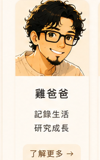
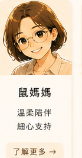
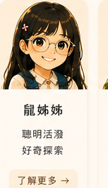
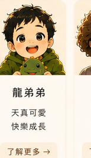
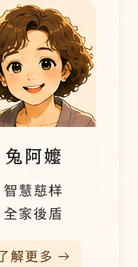

Character Bible V1.0
角色介紹
雞爸爸、鼠媽媽、鼠姊姊、龍弟弟與兔阿嬤，是雞爸爸生活研究室裡固定登場的一家人。所有人物設定依照 Chicken Dad Universe Character Bible V1.0，不再使用舊版圖示或混合畫風。

雞爸爸
用科學理解生活，記錄陪伴與成長。

鼠媽媽
溫柔穩定，是一家人的日常核心。

鼠姊姊
好奇、活潑，也一天一天更勇敢。

龍弟弟
一歲多，短短少少的頭髮，每天探索世界。

兔阿嬤
大眼睛、雙眼皮，慈祥又溫暖的家人後盾。
雞爸爸
黑框眼鏡、短黑髮、山羊鬍，是雞爸爸生活研究室的記錄者。關心健康、親子、棒球、閱讀，也在日常裡尋找答案。
鼠媽媽
耳下短髮，後面不捲，不戴眼鏡。溫柔、細心，是一家人生活節奏裡最安定的力量。
鼠姊姊
長直黑髮，戴著透明薄荷綠眼鏡。活潑、愛笑，也在每一次成長裡學會勇敢。
龍弟弟
一歲多的小男孩，頭髮少少短短，天真、開朗，常抱著綠色小恐龍。
兔阿嬤
不戴眼鏡，大眼睛、明顯雙眼皮，慈祥、溫暖，是一家人的後盾。